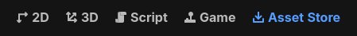
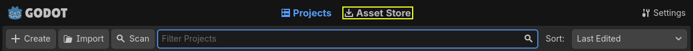
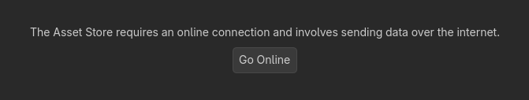
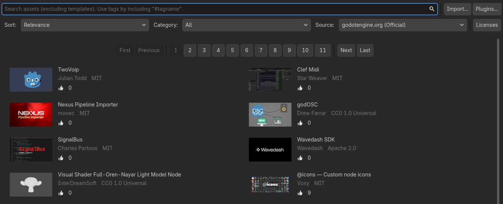
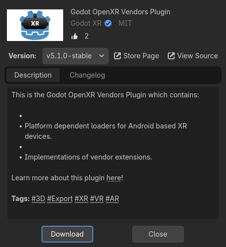
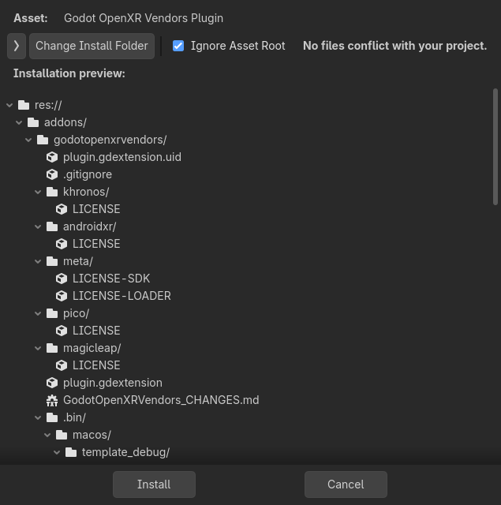
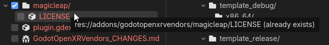

Sử dụng Asset Store trong engine
Truy cập
Bạn có thể truy cập Asset Store ngay trong Godot từ trình quản lý dự án.

Cũng như từ trong trình chỉnh sửa.

Tab của Project Manager chỉ hiển thị các asset là dự án độc lập. Trên Asset Store, các asset này được đánh dấu bằng thẻ Template.
Tab của trình chỉnh sửa chỉ hiển thị các asset không phải là dự án độc lập. Nói cách khác, nó hiển thị asset thuộc mọi danh mục ngoại trừ Templates.
Nếu đây là lần đầu tiên bạn cần engine truy cập internet, bạn sẽ phải nhấp vào nút .

Tải xuống và cài đặt asset
Nhấp vào một asset, Godot sẽ lấy thông tin về nó từ Asset Store. Khi hoàn tất, bạn sẽ thấy một cửa sổ tương tự giao diện website Asset Store, với một vài điểm khác biệt:

Tương tự phiên bản web của Asset Store, ở đây bạn có thể tìm asset theo danh mục hoặc tên, và sắp xếp theo các tiêu chí như tên hoặc ngày chỉnh sửa. Khác với giao diện web, kết quả tìm kiếm được cập nhật theo thời gian thực (bạn không phải nhấn sau mỗi lần thay đổi truy vấn để thay đổi có hiệu lực).
Khi nhấn vào một asset, bạn sẽ thấy thêm thông tin về nó.

Nếu bạn nhấp vào nút , Godot sẽ tải về một file nén của asset và theo dõi tiến trình tải xuống ở cuối cửa sổ trình chỉnh sửa. Nếu tải xuống thất bại, bạn có thể thử lại bằng nút .
Khi tải xuống xong, cửa sổ Configure Asset sẽ tự động mở ra.

Tại đây bạn có thể xem danh sách tất cả các file sẽ được cài đặt. Nếu nhấp vào mũi tên ở góc trên bên trái, một cửa sổ sẽ mở ra để bạn bỏ chọn bất kỳ file nào không muốn cài đặt. Các file không thể cài đặt sẽ hiển thị màu đỏ, và khi rê chuột lên chúng sẽ có thông báo cho biết lý do không thể cài đặt.

Khi hoàn tất, bạn có thể nhấn nút ; thao tác này sẽ giải nén tất cả các file trong file nén và import mọi asset chứa trong đó, chẳng hạn hình ảnh hoặc mô hình 3D. Khi xong, bạn sẽ thấy thông báo cho biết việc cài đặt gói đã hoàn tất.

Bạn cũng có thể dùng nút để import các file nén asset lấy từ nơi khác (chẳng hạn tải trực tiếp từ giao diện web của Asset Store); thao tác này sẽ đưa bạn qua cùng quy trình cài đặt gói như với các asset tải trực tiếp qua Godot mà chúng ta vừa trình bày.